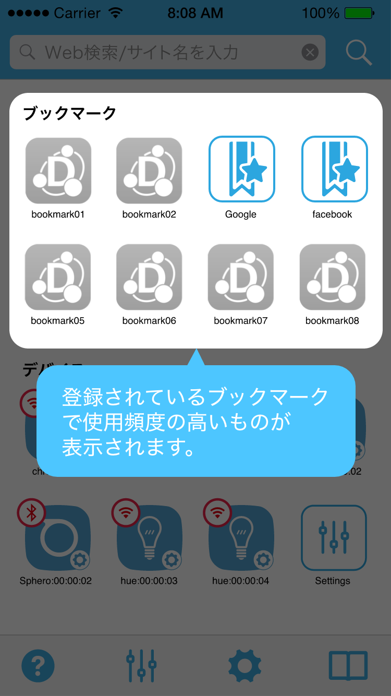
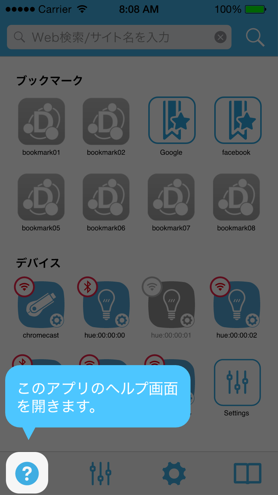
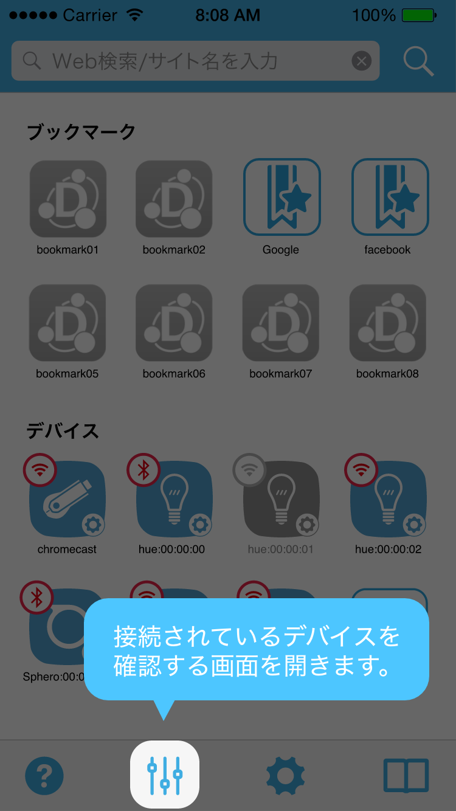

URLを入力し、虫眼鏡ボタンを押すことで、そのページを開くことができます。
また、任意のキーワードを入力し、虫眼鏡ボタンを押すことで、そのキーワードをGoogleで検索することができます。

登録されているブックマークの中で、使用頻度の高いものが表示されます。

端末と接続されているデバイスの一覧が表示されます。9個以上の場合は、設定画面のアイコンが表示されます。
設定画面のアイコンをタップすると、9個以上のデバイスを見ることができます。
この機能は、デバイス一覧画面と同じものです。

ヘルプ画面を開きます。

端末に接続されているデバイスの一覧画面を開きます。

DeviceConnectの設定画面を開きます。

ブックマーク画面を開きます。